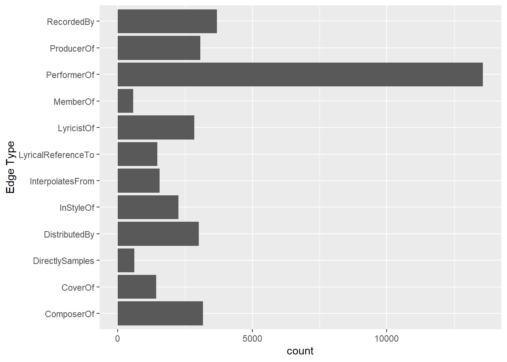

Show code
pacman::p_load(jsonlite, tidyverse, ggtext,
knitr, lubridate, patchwork,
ggraph, tidygraph, igraph,
ggiraph)The case was extracted from VAST Challenge 2025.
One of music’s biggest superstars is Oceanus native Sailor Shift. From humble beginnings, Sailor has grown in popularity and now enjoys fans around the world. Sailor started her career on the island nation of Oceanus which can be clearly seen in her early work, she started in the genre of “Oceanus Folk”. While Sailor has moved away from the traditional Oceanus style, the Oceanus Folk has made a name for itself in the musical world. The popularity of this music is one of the factors driving an increase in tourism to a quiet island nation that used to be known for fishing.
In 2023, Sailor Shift joined the Ivy Echoes – an all-female Oceanus Folk band consisting of Sailor (vocalist), Maya Jensen (vocalist), Lila “Lilly” Hartman (guitarist), Jade Thompson (drummer), and Sophie Ramirez (bassist). They played together at venues throughout Oceanus but had broken up to pursue their individual careers by 2026. Sailor’s breakthrough came in 2028 when one of her singles went viral, launched to the top of the global charts (something no other Oceanus Folk song had ever done). Since then, she has only continued to grow in popularity worldwide.
Sailor has released a new album almost every year since her big break, and each has done better than the last. Although she has remained primarily a solo artist, she has also frequently collaborated with other established artists, especially in the Indie Pop and Indie Folk genres. She herself has branched out musically over the years but regularly returns to the Oceanus Folk genre — even as the genre’s influence on the rest of the music world has spread even more.
Sailor has always been passionate about two things: (1) spreading Oceanus Folk, and (2) helping lesser-known artists break into music. Because of those goals, she’s particularly famous for her frequent collaborations.
Additionally, because of Sailor’s success, more attention began to be paid over the years to her previous bandmates. All 4 have continued in the music industry—Maya as an independent vocalist, Lilly and Jade as instrumentalists in other bands, and Sophie as a music producer for a major record label. In various ways, all of them have contributed to the increased influence of Oceanus folk, resulting in a new generation of up-and-coming Oceanus Folk artists seeking to make a name for themselves in the music industry.
Now, as Sailor returns to Oceanus in 2040, a local journalist – Silas Reed – is writing a piece titled Oceanus Folk: Then-and-Now that aims to trace the rise of Sailor and the influence of Oceanus Folk on the rest of the music world. He has collected a large dataset of musical artists, producers, albums, songs, and influences and organized it into a knowledge graph. Your task is to help Silas create beautiful and informative visualizations of this data and uncover new and interesting information about Sailor’s past, her rise to stardom, and her influence.
Design and develop visualizations and visual analytic tools that will allow Silas to explore and understand the profile of Sailor Shift’s career
Who has she been most influenced by over time?
Who has she collaborated with and directly or indirectly influenced?
How has she influenced collaborators of the broader Oceanus Folk community?
Develop visualizations that illustrate how the influence of Oceanus Folk has spread through the musical world.
Was this influence intermittent or did it have a gradual rise?
What genres and top artists have been most influenced by Oceanus Folk?
On the converse, how has Oceanus Folk changed with the rise of Sailor Shift? From which genres does it draw most of its contemporary inspiration?
Use your visualizations to develop a profile of what it means to be a rising star in the music industry.
Visualize the careers of three artists. Compare and contrast their rise in popularity and influence.
Using this characterization, give three predictions of who the next Oceanus Folk stars with be over the next five years.
In the code chunk below, p_load() of pacman packages is used to load the R packages into R environment:
Utility Tools
Graphing Tools
In the code chunk below, fromJSON() of jsonlite package is used to import MC1_graph.json file into R and save the output object and the data structure is inspected
mc1_nodes_raw <- as_tibble(mc1_data$nodes)
glimpse(mc1_nodes_raw)Rows: 17,412
Columns: 10
$ `Node Type` <chr> "Song", "Person", "Person", "Person", "RecordLabel", "S…
$ name <chr> "Breaking These Chains", "Carlos Duffy", "Min Qin", "Xi…
$ single <lgl> TRUE, NA, NA, NA, NA, FALSE, NA, NA, NA, NA, TRUE, NA, …
$ release_date <chr> "2017", NA, NA, NA, NA, "2026", NA, NA, NA, NA, "2020",…
$ genre <chr> "Oceanus Folk", NA, NA, NA, NA, "Lo-Fi Electronica", NA…
$ notable <lgl> TRUE, NA, NA, NA, NA, TRUE, NA, NA, NA, NA, TRUE, NA, N…
$ id <int> 0, 1, 2, 3, 4, 5, 6, 7, 8, 9, 10, 11, 12, 13, 14, 15, 1…
$ written_date <chr> NA, NA, NA, NA, NA, NA, NA, NA, NA, NA, "2020", NA, NA,…
$ stage_name <chr> NA, NA, NA, NA, NA, NA, NA, NA, NA, NA, NA, NA, NA, NA,…
$ notoriety_date <chr> NA, NA, NA, NA, NA, NA, NA, NA, NA, NA, NA, NA, NA, NA,…kable(head(mc1_nodes_raw, 5))| Node Type | name | single | release_date | genre | notable | id | written_date | stage_name | notoriety_date |
|---|---|---|---|---|---|---|---|---|---|
| Song | Breaking These Chains | TRUE | 2017 | Oceanus Folk | TRUE | 0 | NA | NA | NA |
| Person | Carlos Duffy | NA | NA | NA | NA | 1 | NA | NA | NA |
| Person | Min Qin | NA | NA | NA | NA | 2 | NA | NA | NA |
| Person | Xiuying Xie | NA | NA | NA | NA | 3 | NA | NA | NA |
| RecordLabel | Nautical Mile Records | NA | NA | NA | NA | 4 | NA | NA | NA |
mc1_edges_raw <- as_tibble(mc1_data$links)
glimpse(mc1_edges_raw)Rows: 37,857
Columns: 4
$ `Edge Type` <chr> "InterpolatesFrom", "RecordedBy", "PerformerOf", "Composer…
$ source <int> 0, 0, 1, 1, 2, 2, 3, 5, 5, 5, 5, 5, 5, 5, 5, 5, 5, 5, 5, 5…
$ target <int> 1841, 4, 0, 16180, 0, 16180, 0, 5088, 14332, 11677, 2479, …
$ key <int> 0, 0, 0, 0, 0, 0, 0, 0, 0, 0, 0, 0, 0, 0, 0, 0, 0, 0, 0, 0…kable(head(mc1_edges_raw, 10))| Edge Type | source | target | key |
|---|---|---|---|
| InterpolatesFrom | 0 | 1841 | 0 |
| RecordedBy | 0 | 4 | 0 |
| PerformerOf | 1 | 0 | 0 |
| ComposerOf | 1 | 16180 | 0 |
| PerformerOf | 2 | 0 | 0 |
| ProducerOf | 2 | 16180 | 0 |
| PerformerOf | 3 | 0 | 0 |
| InterpolatesFrom | 5 | 5088 | 0 |
| InStyleOf | 5 | 14332 | 0 |
| InterpolatesFrom | 5 | 11677 | 0 |
Convert date fields from “chr” to “int”
Note: Dates only appears in Songs and Albums.
mc1_nodes_raw <- mc1_nodes_raw %>%
mutate(across(c(release_date, notoriety_date, written_date),
~as.integer(if_else(`Node Type` %in% c("Song", "Album"), ., NA_character_))))For Nodes, there are no duplicates:
mc1_nodes_raw %>%
count(id) %>%
filter(n > 1)# A tibble: 0 × 2
# ℹ 2 variables: id <int>, n <int>For Edges, there are duplicates as seen below. Only their Keys are different. However, Keys are not used for subsequent data analysis. Hence, these duplicated edges are removed.
# Step 1: Identify duplicate combinations
duplicate_summary <- mc1_edges_raw %>%
count(source, target, `Edge Type`) %>%
filter(n > 1)
# Step 2: Join back to get all original duplicate rows
mc1_edges_raw %>%
inner_join(duplicate_summary, by = c("source", "target", "Edge Type"))# A tibble: 6 × 5
`Edge Type` source target key n
<chr> <int> <int> <int> <int>
1 PerformerOf 17057 17058 0 2
2 PerformerOf 17057 17058 1 2
3 PerformerOf 17349 17350 0 2
4 PerformerOf 17349 17350 2 2
5 PerformerOf 17355 17356 0 2
6 PerformerOf 17355 17356 2 2All duplicates were removed:
mc1_edges_raw <- mc1_edges_raw %>%
distinct(source, target, `Edge Type`, .keep_all = TRUE)
mc1_edges_raw %>%
count(source, target, `Edge Type`) %>%
filter(n > 1)# A tibble: 0 × 4
# ℹ 4 variables: source <int>, target <int>, Edge Type <chr>, n <int>mc1_nodes_raw$release_date %>% unique() [1] 2017 NA 2026 2020 2027 2022 2007 2010 2003 2023 1997 2013 2000 2025 2029
[16] 2015 2018 2016 2014 2028 2021 2030 2011 1994 2004 1998 1991 1999 2024 2012
[31] 2002 2006 2008 2019 1995 1989 2032 2009 2001 1996 1990 1984 2005 1993 1986
[46] 1985 1981 1992 1987 1988 1983 2031 1975 2035 2033 2037 2036 2039 2038 2034
[61] 1977 1979 1980 1982 2040mc1_nodes_raw %>%
filter(grepl("Sailor Shift", name)) #Sailor Shift is in name column and not in stage_name column# A tibble: 1 × 12
`Node Type` name single release_date genre notable id written_date
<chr> <chr> <lgl> <int> <chr> <lgl> <int> <int>
1 Person Sailor Shift NA NA <NA> NA 17255 NA
# ℹ 4 more variables: stage_name <chr>, notoriety_date <int>, is_sailor <lgl>,
# is_oceanus_folk <lgl>mc1_nodes_clean <- mc1_nodes_raw %>%
mutate(
name = gsub("'", "", name)
) %>%
select(`Node Type`, name, release_date, genre, notable, id, single, written_date, stage_name, notoriety_date, is_sailor, is_oceanus_folk)
# Belinda: a lot of nodes were missing - single, written_date, stage_name, notoriety_date, is_sailor, is_oceanus_folk. added them upfront so that we can reuse these variables later on.
kable(head(mc1_nodes_clean))| Node Type | name | release_date | genre | notable | id | single | written_date | stage_name | notoriety_date | is_sailor | is_oceanus_folk |
|---|---|---|---|---|---|---|---|---|---|---|---|
| Song | Breaking These Chains | 2017 | Oceanus Folk | TRUE | 0 | TRUE | NA | NA | NA | FALSE | TRUE |
| Person | Carlos Duffy | NA | NA | NA | 1 | NA | NA | NA | NA | FALSE | FALSE |
| Person | Min Qin | NA | NA | NA | 2 | NA | NA | NA | NA | FALSE | FALSE |
| Person | Xiuying Xie | NA | NA | NA | 3 | NA | NA | NA | NA | FALSE | FALSE |
| RecordLabel | Nautical Mile Records | NA | NA | NA | 4 | NA | NA | NA | NA | FALSE | FALSE |
| Song | Unshackled Heart | 2026 | Lo-Fi Electronica | TRUE | 5 | FALSE | NA | NA | NA | FALSE | FALSE |
Confirm that the IDs used in edges match the range of IDs in nodes
range(mc1_edges_raw$source)[1] 0 17411range(mc1_edges_raw$target) [1] 0 17411id_map <- mc1_nodes_clean %>%
select(name, id)
id_map# A tibble: 17,412 × 2
name id
<chr> <int>
1 Breaking These Chains 0
2 Carlos Duffy 1
3 Min Qin 2
4 Xiuying Xie 3
5 Nautical Mile Records 4
6 Unshackled Heart 5
7 Luke Payne 6
8 Xiulan Zeng 7
9 David Franklin 8
10 Colline-Cascade Studios 9
# ℹ 17,402 more rowsmc1_edges_clean <- mc1_edges_raw %>%
left_join(id_map, by = c("source" = "id")) %>%
rename(from = name) %>%
left_join(id_map, by = c("target" = "id")) %>%
rename(to = name)
mc1_edges_clean# A tibble: 37,854 × 6
`Edge Type` source target key from to
<chr> <int> <int> <int> <chr> <chr>
1 InterpolatesFrom 0 1841 0 Breaking These Chains Ripples and Whisp…
2 RecordedBy 0 4 0 Breaking These Chains Nautical Mile Rec…
3 PerformerOf 1 0 0 Carlos Duffy Breaking These Ch…
4 ComposerOf 1 16180 0 Carlos Duffy Siege of Barcelon…
5 PerformerOf 2 0 0 Min Qin Breaking These Ch…
6 ProducerOf 2 16180 0 Min Qin Siege of Barcelon…
7 PerformerOf 3 0 0 Xiuying Xie Breaking These Ch…
8 InterpolatesFrom 5 5088 0 Unshackled Heart Echoes of a Lonel…
9 InStyleOf 5 14332 0 Unshackled Heart Amber Twilight
10 InterpolatesFrom 5 11677 0 Unshackled Heart Forbidden Embrace
# ℹ 37,844 more rowsmc1_edges_clean <- mc1_edges_clean %>% #Drops source and target columns
select(from, to, `Edge Type`)
mc1_edges_clean# A tibble: 37,854 × 3
from to `Edge Type`
<chr> <chr> <chr>
1 Breaking These Chains Ripples and Whispers InterpolatesFrom
2 Breaking These Chains Nautical Mile Records RecordedBy
3 Carlos Duffy Breaking These Chains PerformerOf
4 Carlos Duffy Siege of Barcelonas Twilight ComposerOf
5 Min Qin Breaking These Chains PerformerOf
6 Min Qin Siege of Barcelonas Twilight ProducerOf
7 Xiuying Xie Breaking These Chains PerformerOf
8 Unshackled Heart Echoes of a Lonely Gaze InterpolatesFrom
9 Unshackled Heart Amber Twilight InStyleOf
10 Unshackled Heart Forbidden Embrace InterpolatesFrom
# ℹ 37,844 more rowsmc1_edges_clean <- mc1_edges_clean %>%
filter(!is.na(from), !is.na(to))missing_nodes <- setdiff(
unique(c(mc1_edges_clean$from, mc1_edges_clean$to)),
mc1_nodes_clean$name
)
missing_nodescharacter(0)Define valid source and destination types for each edge type as per the data description file:
# Define valid source and destination types for each edge type
edge_rules <- list(
PerformerOf = list(source = c("Person", "MusicalGroup"), target = c("Song", "Album")),
ComposerOf = list(source = c("Person"), target = c("Song", "Album")),
ProducerOf = list(source = c("Person", "RecordLabel"), target = c("Song", "Album", "Person", "MusicalGroup")),
LyricistOf = list(source = c("Person"), target = c("Song", "Album")),
RecordedBy = list(source = c("Song", "Album"), target = c("RecordLabel")),
DistributedBy = list(source = c("Song", "Album"), target = c("RecordLabel")),
InStyleOf = list(source = c("Song", "Album"), target = c("Song", "Album", "Person", "MusicalGroup")),
InterpolatesFrom = list(source = c("Song", "Album"), target = c("Song", "Album")),
CoverOf = list(source = c("Song", "Album"), target = c("Song", "Album")),
LyricalReferenceTo = list(source = c("Song", "Album"), target = c("Song", "Album")),
DirectlySamples = list(source = c("Song", "Album"), target = c("Song", "Album")),
MemberOf = list(source = c("Person"), target = c("MusicalGroup"))
)Check if there were erroreous edge and node relationships:
# Create a lookup for node types
node_type_lookup <- mc1_nodes_clean %>%
select(name, `Node Type`) %>%
deframe()
# Add source and target node types to the edge table
mc1_edges_checked <- mc1_edges_clean %>%
mutate(
source_type = node_type_lookup[from],
target_type = node_type_lookup[to]
)
mc1_edges_tagged <- mc1_edges_checked %>%
rowwise() %>%
mutate(
valid = {
rule <- edge_rules[[`Edge Type`]]
if (is.null(rule)) TRUE
else {
source_type %in% rule$source && target_type %in% rule$target
}
}
) %>%
ungroup()
# Count and display invalid edge combinations
invalid_edge_summary <- mc1_edges_tagged %>%
filter(!valid) %>%
count(`Edge Type`, source_type, target_type, sort = TRUE)
print(invalid_edge_summary)# A tibble: 33 × 4
`Edge Type` source_type target_type n
<chr> <chr> <chr> <int>
1 LyricistOf MusicalGroup Song 106
2 RecordedBy RecordLabel Album 102
3 ProducerOf MusicalGroup Song 100
4 ComposerOf MusicalGroup Song 97
5 ProducerOf MusicalGroup Album 31
6 LyricistOf MusicalGroup Album 28
7 ComposerOf MusicalGroup Album 17
8 InStyleOf MusicalGroup MusicalGroup 12
9 InStyleOf Person MusicalGroup 11
10 InterpolatesFrom MusicalGroup MusicalGroup 10
# ℹ 23 more rows# Check total invalid edge count
cat("Total invalid edges:", sum(!mc1_edges_tagged$valid), "\n")Total invalid edges: 570 There were 570 invalid edges.
Belinda: I updated the codes to keep the valid edges as the previous version was too chunky.
# Keep only valid edges
mc1_edges_clean <- mc1_edges_tagged %>%
filter(valid)ggplot(data = mc1_edges_clean,
aes(y = `Edge Type`)) +
geom_bar()
ggplot(data = mc1_nodes_clean,
aes(y = `Node Type`)) +
geom_bar()
tbl_graph() is used to create tidygraph’s graph object by using the code chunk below
music = tbl_graph(edges = mc1_edges_clean,
nodes = mc1_nodes_clean,
directed = TRUE)set.seed(1234)